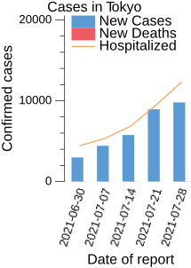

見世物小屋

実際に見たことがあるわけではないが，大昔には板に赤い塗料を塗って「イタチ（板血）でござーい」みたいな見世物小屋があったらしい。
毎度（少なくとも今世紀）のことではあるが，私は「オリンピック」は見ないことにしている。 それでもスポーツ報道では嫌でも言及されるし，何より実家では私にチャネル権はない（笑）
そうやって 見させられる オリンピック報道やワイドショウから真っ先に連想したのが「イタチでござーい」だったりする。
感動ポルノ，メディア・レイプ，感情の搾取
オリンピックってやっぱ「見世物小屋」なんだな。
プロレスやサーカスみたいなプロの「興行」なら「そういうもん」として楽しめるだろう。 でも，それならそれで一銭たりとも税金を使わないでほしかった。 下手に国家が絡むから，いざというときに「止める」決断ができないんだよ。 こうなるといくら「緊急事態」を繰り返しても抑止力を維持できないだろう。

これを称して「腐敗」と言う。 見世物小屋に国家レベルで群がり皮算用する様はグロテスクである。
これに懲りたら二度と「日本でオリンピックをやる」とか言わんことやね。 私はグロいのは高橋葉介さんまでが精一杯なんだよ。
参考文献

- 総特集 高橋葉介 大増補新版 ―『夢幻紳士』40周年記念― (文藝別冊)
- 高橋葉介 (著)
- 河出書房新社 2021-06-11 (Release 2021-06-11)
- ムック
- 4309980309 (ASIN), 9784309980300 (EAN), 4309980309 (ISBN)
- 評価
2021年は夢幻紳士40周年なんだそうな。紙の本だが，ついカッとなってポチってしまった。反省はしない。

- スパム[spam]:インターネットのダークサイド
- フィン・ブラントン (著), 生貝直人 (監修), 成原慧 (監修), 松浦俊輔 (翻訳)
- 河出書房新社 2015-12-25
- 単行本
- 430924744X (ASIN), 9784309247441 (EAN), 430924744X (ISBN)
- 評価
とりあえず読みづらい。修飾語が多すぎるよ。ギリシア神話かっての。